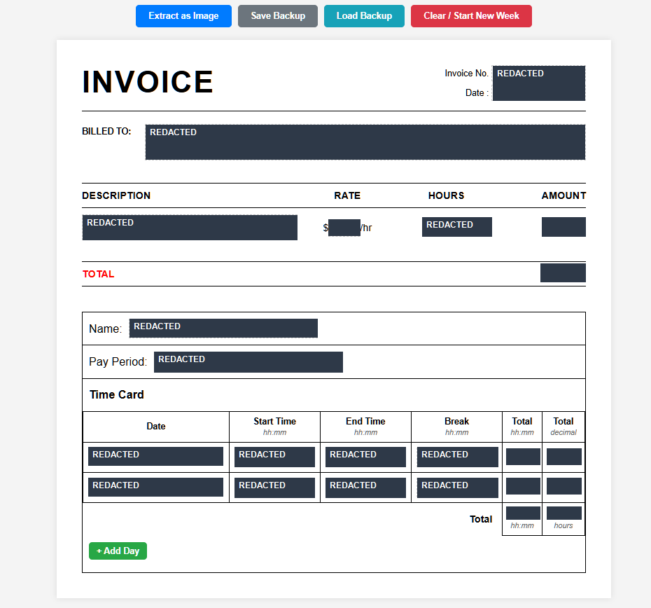

Time tracking
Supports adding daily entries with start and end times and breaks. It calculates net hours, including overnight shifts, and displays hours and decimal totals.
PERSONAL PRODUCTIVITY / BROWSER UTILITY
A reusable browser-based utility that simplifies weekly invoice and timecard preparation for my partner.
OVERVIEW
I noticed my partner was manually exporting and creating a new timecard file each week. I created this AI-assisted utility to consolidate time entry, invoice calculation, and export into a reusable interface, reducing repetitive preparation.
Supports adding daily entries with start and end times and breaks. It calculates net hours, including overnight shifts, and displays hours and decimal totals.
Uses recorded hours and the entered hourly rate to calculate the invoice amount automatically.
Automatically retains form data in browser storage, supports starting a new week, and allows JSON backups to be exported and restored.
Uses html2canvas to generate a PNG copy of the completed invoice and timecard, with interface-only controls hidden from the output.
APPLICATION SHOWCASE

The combined form allows the user to enter work hours, review calculated totals, save a backup and export the formatted invoice without preparing a separate document manually.
WORKFLOW
Browser storage and backups may contain personal and financial information. The original HTML and records are not published in this portfolio.
LEARNING OUTCOMES